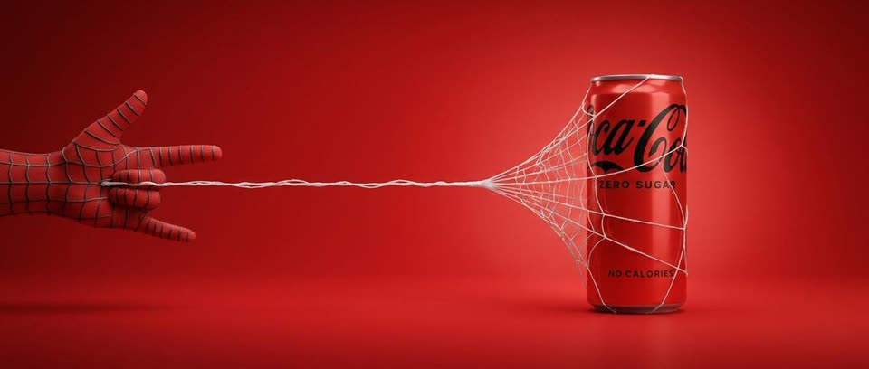

Cinematic Product Advertisement with Spider Web
PRP-004Prop stylingNano Banana Proby MaddoxAugust 11,

A professional product advertising prompt designed to integrate a reference item with a realistic spider web effect and minimalist studio lighting.
Prompt
Using the uploaded product as the exact reference, preserve its original shape, branding, packaging, label, logo, colors, proportions and details. Do not redesign, replace or modify the product in any way. Create a premium minimalist advertising composition in a {argument name="aspect ratio" default="panoramic 21:9"} format. Use a seamless studio background matching the {argument name="background color" default="dominant color of the product"} with a soft radial gradient and subtle vignette. On the far left, place a {argument name="hand gesture" default="generic red web-pattern glove performing a web-shooting hand gesture"}. A realistic white spider web shoots horizontally across the frame, maintaining identical thickness across approximately 80% of its length. Only near the product should the web naturally wrap around, attach to, interact with, or visually blend into the product in a clean and satisfying way while preserving the product's original appearance. The web should remain the same width throughout the composition and create a smooth, seamless transition from left to right. Keep the composition clean with plenty of negative space. Luxury commercial product photography, ultra-realistic, premium advertising aesthetic, soft studio lighting, realistic shadows, ultra-sharp focus, glossy details, 8K, highly detailed, photorealistic.Tags: product